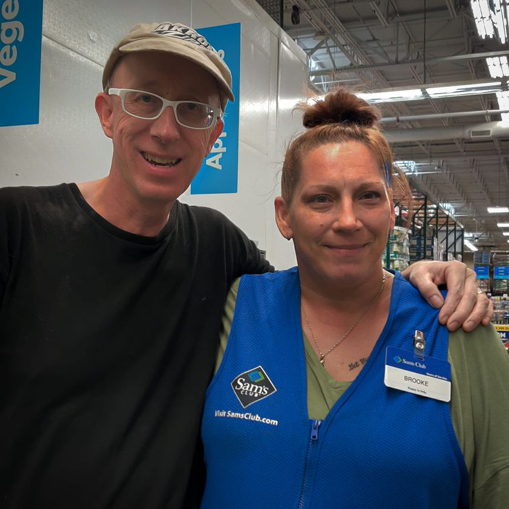

Timeline photos
This is my friend Brooke. She spent at least one winter in our tent village.
She didn't need to be forced out by @[139561179458303:274:City of Akron, Ohio - Mayor's Office] and @[100791901503017:274:Summit County Continuum of Care]
She got a house, the same house she lives in today, when she had saved enough money and was able to find an apartment.
Sanctioned tent villages work for people that need them.